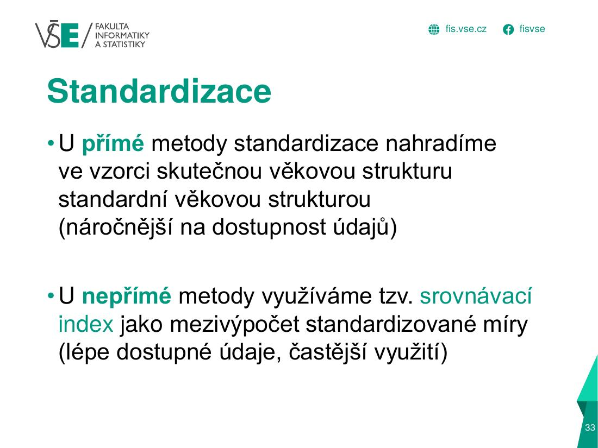
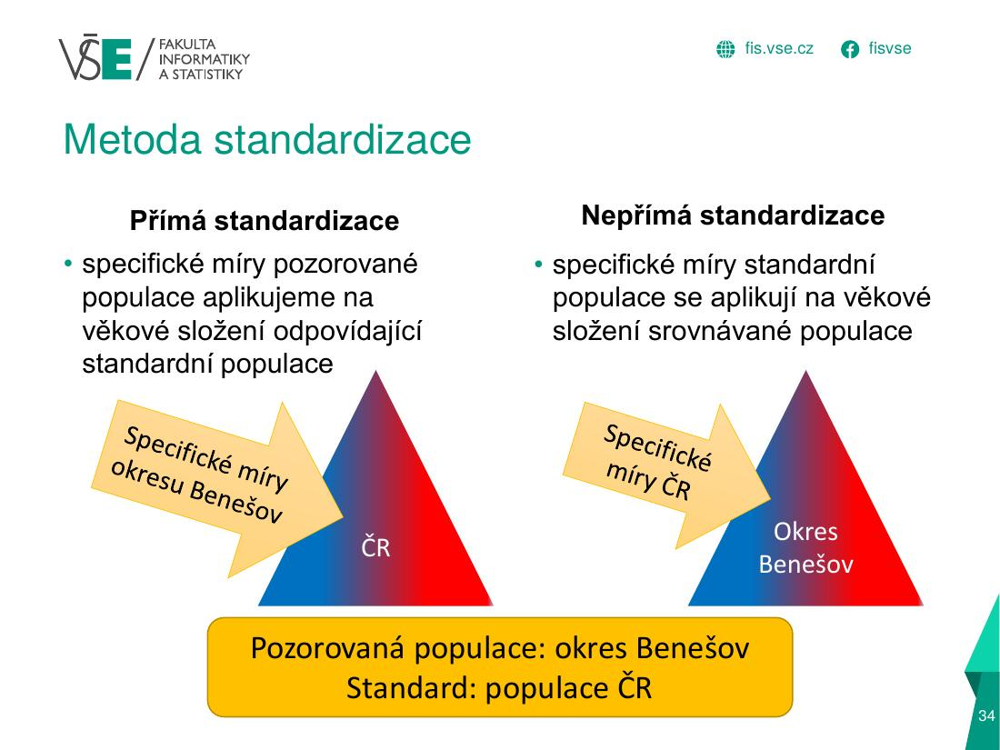
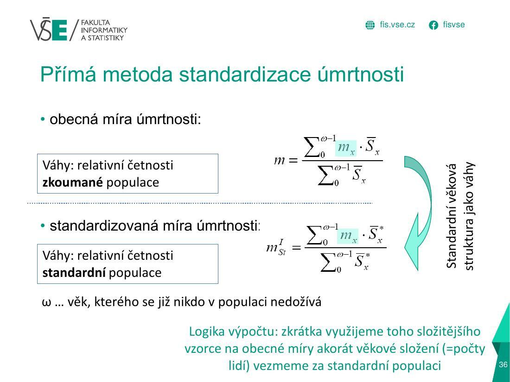
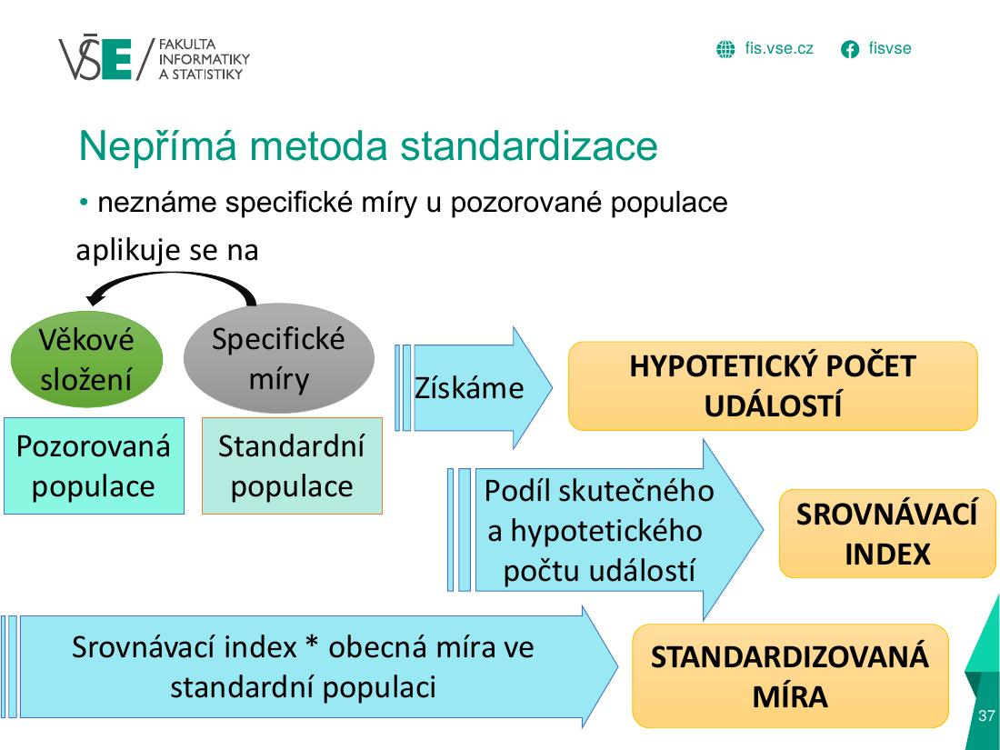
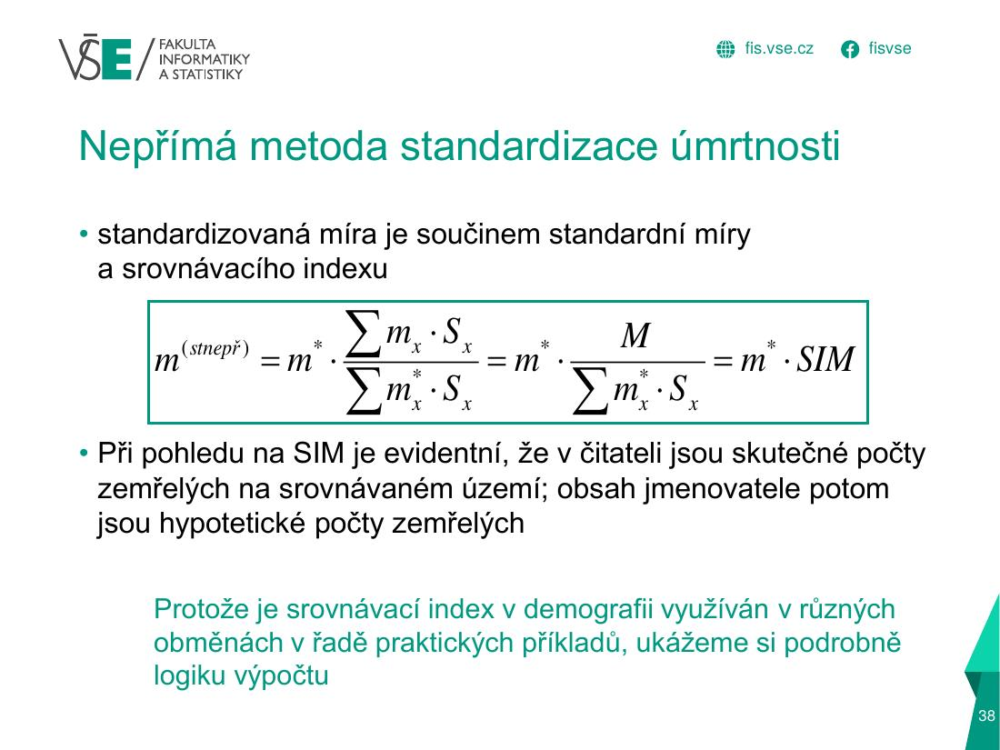
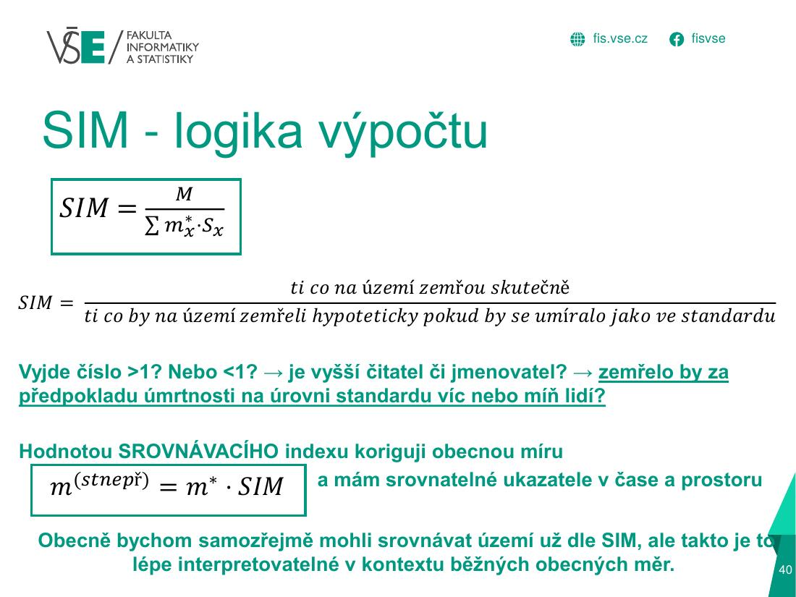

A) Nepřímá standardizace úmrtnostiÚloha 2 · 8 b
Logika v kostce
1 · Teorie a vzorce – přímo ze slidů








2 · Graficky: jak se to počítá
Specifické míry standardu (ČR)
Hypotetičtí zemřelí v každé skupině okresu
Součet přes všechny skupiny
Srovnávací index úmrtnosti
Standardizovaná míra
Krok 1: míry standardu m*x (ČR) – umírá se hlavně ve stáří
Obyvatelé okresu Sx – mladší populace
Krok 2: hypotetičtí zemřelí Mhx = m*x · Sx
3 · Jak to vypadá v Excelu (tvoje semestrální práce)
| A | B | C | D | E | F | G | H | |
|---|---|---|---|---|---|---|---|---|
| 6 | Věk | Počty obyvatel k 1.7. | Počty zemřelých | Specifické míry úmrtnosti | Hypotetické počty zemřelých | |||
| 7 | Chrudim | Pardubický kraj | ČR | Česká republika | Česká republika | Chrudim | Pardubický kraj | |
| 8 | x | Sx | Sx | Sx* | Mx* | mx* | Mxh | Mxh |
| 9 | 0 | 403 | 1 961 | 39 467 | 89 | 0,00226 | 0,90878 | 4,42215 |
| 10 | 1-4 | 2 043 | 9 821 | 200 821 | 22 | 0,00011 | 0,22381 | 1,07589 |
| 11 | 5-9 | 2 794 | 14 082 | 287 109 | 16 | 0,00006 | 0,1557 | 0,78476 |
| 12 | 10-14 | 2 739 | 14 047 | 285 011 | 24 | 0,00008 | 0,23064 | 1,18286 |
| 13 | 15-19 | 2 832 | 14 585 | 300 333 | 57 | 0,00019 | 0,53748 | 2,76808 |
| ⋮ | … řádky 14–28 mají stejný vzorec (vyplněno dolů) … | |||||||
| 29 | 95+ | 88 | 469 | 9 904 | 3 538 | 0,35723 | 31,43619 | 167,54 |
| 30 | Celkem | 53 488 | 267 481 | 5 540 113 | 55 557 | 567,90 | 2 750,57 | |
- B, C, D – střední stav žen (okres, kraj, ČR – standard) po věkových skupinách; E – zemřelí v ČR (standard).
F9 =E9/D9– krok 1: specifická míra úmrtnosti standardu m*x.G9 =F9*B9– krok 2: hypotetický počet zemřelých v okrese (kdyby tam umírali jako v ČR);H9 =F9*C9totéž pro kraj.G30 =SUM(G9:G29)– krok 3: součet hypotetických zemřelých ΣMh.
| F | G | H | I | |
|---|---|---|---|---|
| 32 | Chrudim | Pardubický kraj | ČR(*) | |
| 33 | M | 637 | 2 685 | Tabulka F.01 |
| 34 | m | 0,01191 | 0,00048 | 0,01003 |
| 35 | SIM | 1,12168 | 0,97616 | |
| 36 | mstnepř | 0,01125 | 0,00979 |
G33= skutečný počet zemřelých M (z Demo ročenky).G34 =G33/B30– obecná míra úmrtnosti okresu m = M / ΣS.G35 =G33/G30– SIM = skutečně / hypoteticky (1,12 → v Chrudimi se umírá o 12 % více, než by odpovídalo ČR).I34 =E30/D30– obecná míra úmrtnosti standardu (ČR) m*;G36 =G35*I34– standardizovaná míra mst = SIM · m*.
=H33/D30 – kraj dělíš počtem obyvatel ČR (D30). Má být =H33/C30 (obyvatelé kraje). Opraví se obecná míra úmrtnosti kraje; SIM a standardizovaná míra jsou v pořádku.4 · Doplňky z přednášek
Další vzorce z přednášek (méně časté, ale mohou být v teorii)
5 · Doplňující text, tabulky a časté chyby
Rozbalit textový výklad (pro kontrolu a opakování)
| Krok | Co počítáš | Vzorec |
|---|---|---|
| 1 | specifická míra standardu (ČR) | m*x = M*x / S*x (v ‰ ×1000) |
| 2 | hypotetický počet zemřelých v každé věkové skupině | Mhx = m*x · Sx (S okresu/kraje) |
| 3 | součet hypotetických zemřelých | ΣMhx |
| 4 | obecná míra úmrtnosti okresu (nestandardizovaná) | m = M / ΣSx · 1000 |
| 5 | srovnávací index úmrtnosti | SIM = M / ΣMhx (skutečně / hypoteticky) |
| 6 | standardizovaná míra | mst = m* · SIM, kde m* = obecná míra úmrtnosti standardu (ΣM*/ΣS*) |
Vyřešený příklad – Praha-východ vs. Středočeský kraj (kompletní)
Zadání (vzorový příklad „složitější“ č. 3): porovnej úmrtnost okresu Praha-východ (PV) a Středočeského kraje (SC) metodou nepřímé standardizace; standard = ČR. Žlutě je označeno, co v testu chybělo.
| Věk | S okres PV | S kraj SC | S* ČR | M* ČR | m* ČR (‰) | Mh PV | Mh SC |
|---|---|---|---|---|---|---|---|
| 0 | 1 128 | 7 599 | 56 829 | 151 | 2,65709 | 3 | 20 |
| 1–4 | 5 164 | 33 235 | 234 166 | 36 | 0,15374 | 1 | 5 |
| 5–9 | 7 257 | 42 824 | 287 131 | 24 | 0,08359 | 1 | 4 |
| 10–14 | 6 848 | 43 278 | 300 467 | 25 | 0,08320 | 1 | 4 |
| 15–19 | 4 799 | 33 950 | 249 013 | 83 | 0,33332 | 2 | 11 |
| 20–24 | 3 903 | 30 696 | 247 031 | 153 | 0,61936 | 2 | 19 |
| 25–29 | 4 655 | 39 471 | 328 033 | 235 | 0,71639 | 3 | 28 |
| 30–34 | 5 854 | 45 462 | 371 492 | 343 | 0,92330 | 5 | 42 |
| 35–39 | 7 195 | 51 373 | 392 355 | 492 | 1,25397 | 9 | 64 |
| 40–44 | 9 607 | 64 787 | 467 837 | 909 | 1,94298 | 19 | 126 |
| 45–49 | 8 577 | 60 685 | 442 167 | 1 329 | 3,00565 | 26 | 182 |
| 50–54 | 5 986 | 45 698 | 351 090 | 1 931 | 5,50001 | 33 | 251 |
| 55–59 | 4 942 | 41 209 | 332 181 | 2 984 | 8,98305 | 44 | 370 |
| 60–64 | 4 241 | 37 794 | 310 615 | 4 969 | 15,99730 | 68 | 605 |
| 65–69 | 4 434 | 39 259 | 314 351 | 8 058 | 25,63377 | 114 | 1 006 |
| 70–74 | 3 767 | 34 087 | 269 846 | 10 989 | 40,72323 | 153 | 1 388 |
| 75–79 | 2 345 | 20 222 | 168 835 | 10 854 | 64,28762 | 151 | 1 300 |
| 80–84 | 1 101 | 10 071 | 88 286 | 9 389 | 106,34755 | 117 | 1 071 |
| 85–89 | 554 | 5 154 | 45 464 | 8 317 | 182,93595 | 101 | 943 |
| 90–94 | 177 | 1 665 | 14 592 | 4 360 | 298,79386 | 53 | 497 |
| 95+ | 41 | 306 | 2 379 | 968 | 406,89365 | 17 | 125 |
| Celkem | 92 575 | 688 825 | 5 274 160 | 66 599 | 12,62741 | 922 | 8 062 |
Doplnění chybějících: m*40–44 = 909 / 467 837 · 1000 = 1,94298; MhPV, 65–69 = 25,63377/1000 · 4 434 = 114 (při zaokrouhlení 113,66 → 114).
| Okres PV | Středočeský kraj | ČR | |
|---|---|---|---|
| Skutečný počet zemřelých M | 797 | 7 836 | 66 599 |
| Obecná míra úmrtnosti m [‰] | 8,61 | 11,38 | 12,63 |
| Σ hypotetických zemřelých Mh | 922 | 8 062 | |
| Srovnávací index SIM | 0,864 | 0,972 | |
| Standardizovaná míra mst [‰] | 10,91 | 12,27 | 12,63 |
Interpretace: okres PV má sice nízkou obecnou míru úmrtnosti (8,61 ‰) – je to ale hlavně tím, že má mladou populaci. Po standardizaci vychází mst = 10,91 ‰ a SIM = 0,864 < 1: kdyby v PV umírali jako v ČR, zemřelo by o ~14 % víc lidí, než zemřelo. Úmrtnost v PV je tedy nižší než v ČR (12,63 ‰) i než ve Středočeském kraji (mst = 12,27 ‰, SIM = 0,972).